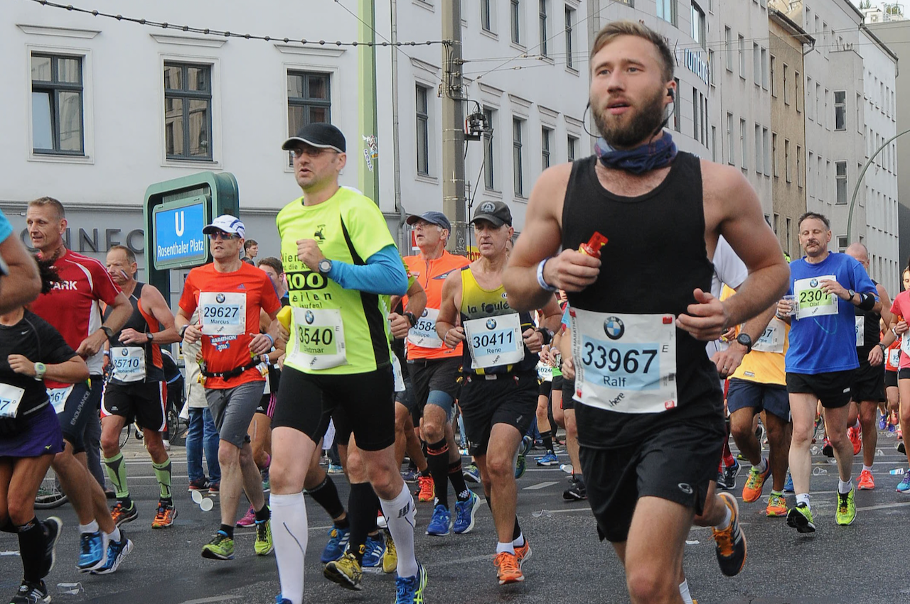
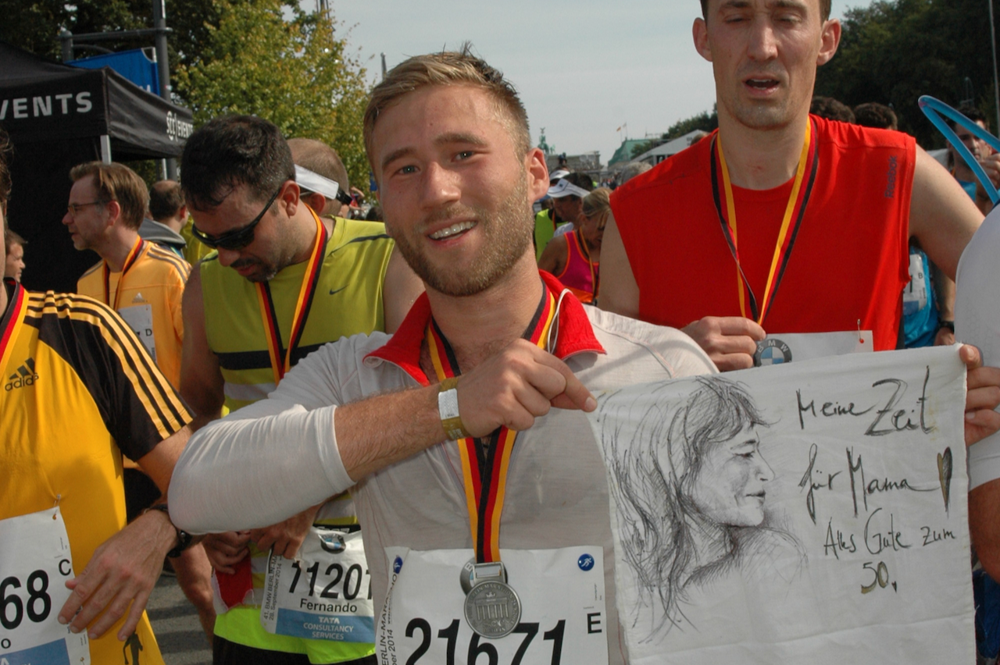
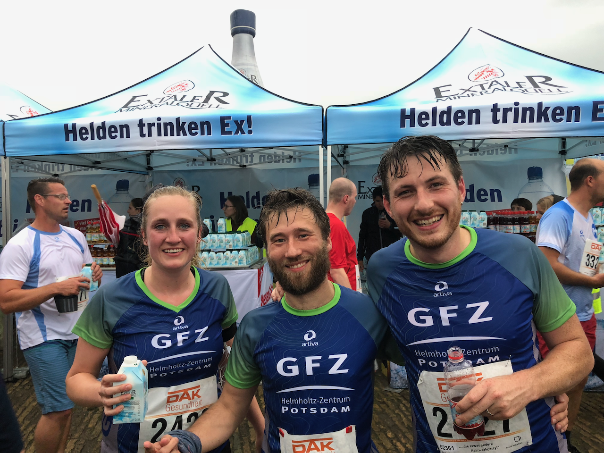
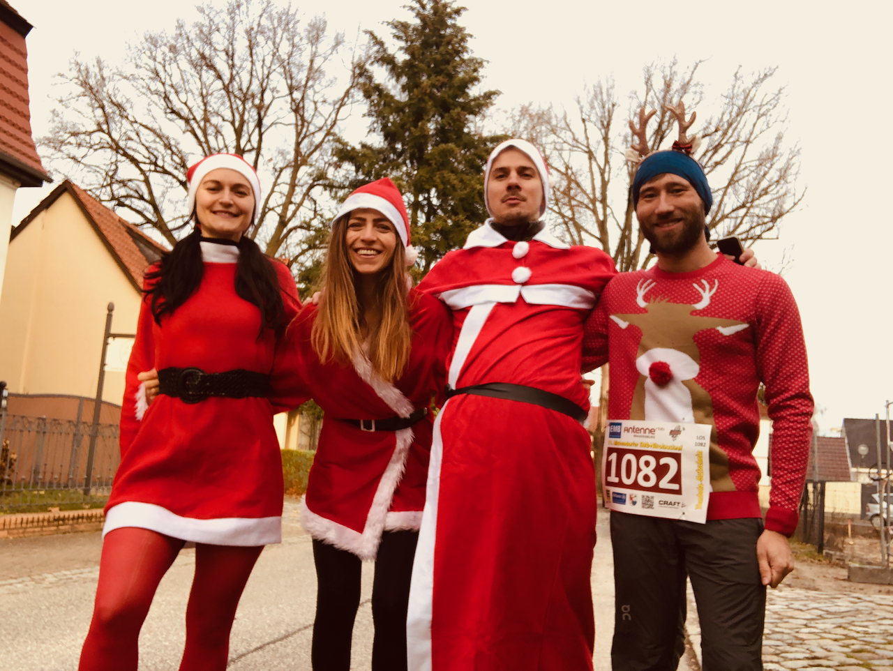
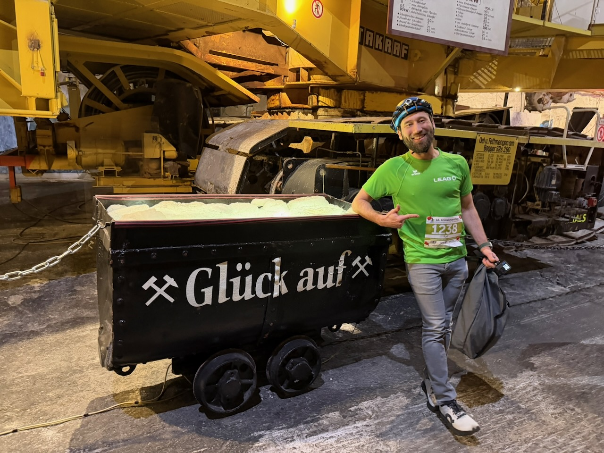
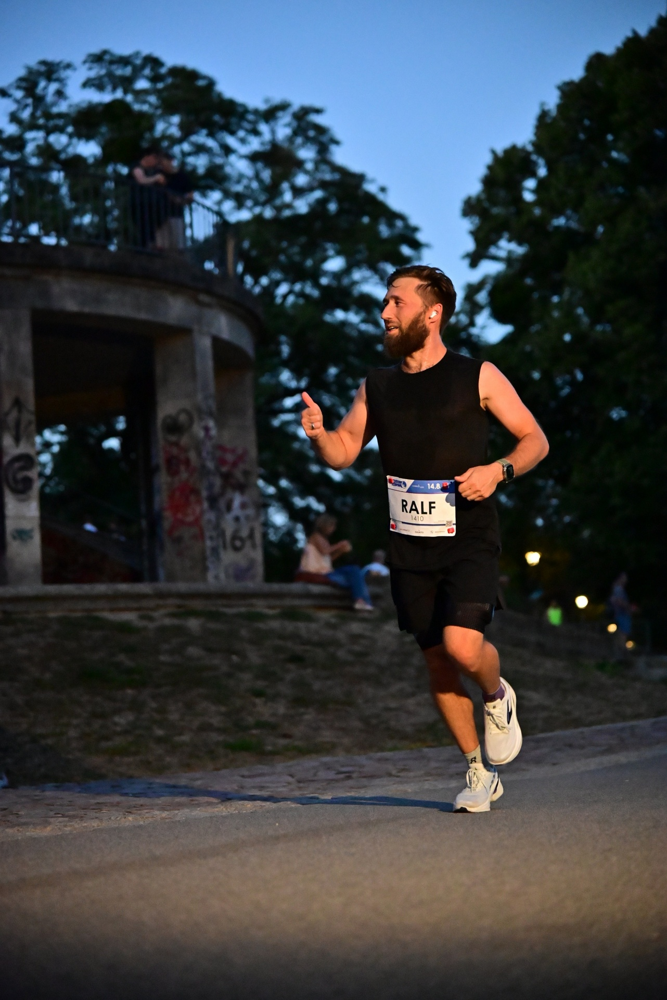
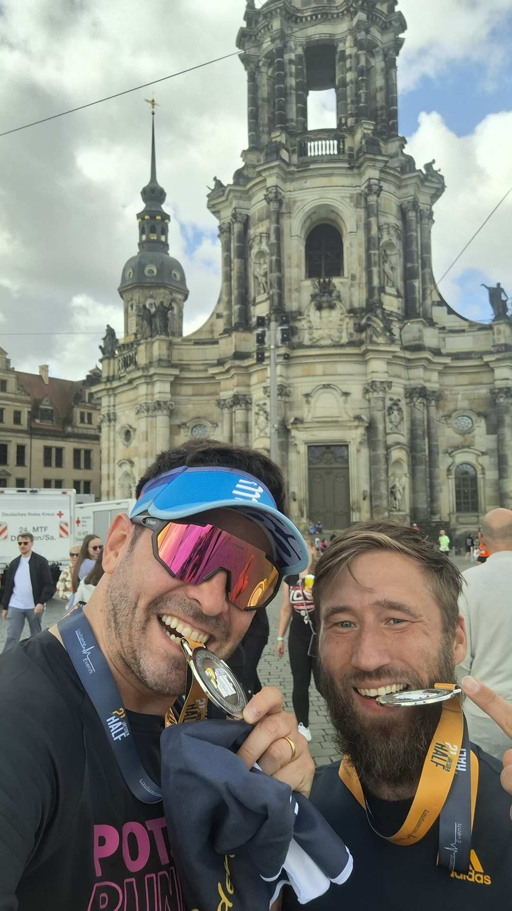

Seit September 2023 plane ich bei der Lausitz Energie Bergbau AG die Entwässerung der sächsischen Tagebaue Nochten und Reichwalde. Mein wichtigstes Werkzeug ist ein numerisches Grundwasserströmungsmodell in PCGEOFIM, und das hat es in sich:
28 Modellgrundwasserleiter mit jeweils bis zu 80.000 aktiven Zellen bei einer Auflösung von 100 × 100 m, über 2.500 Brunnen und mehr als 4.400 Pegel für den Soll-Ist-Vergleich. Damit bilde ich die bisherige Entwicklung nach (Epignose) und berechne, wie sich das Grundwasser künftig verhält (Prognose).
Aus den Modellergebnissen folgen konkrete Entscheidungen: wo neue Filterbrunnen entstehen, damit der Tagebau trocken bleibt, und welche Maßnahmen nötig sind, damit das Grundwasser nach dem Ende des aktiven Bergbaus kontrolliert wieder ansteigen kann. Meine Arbeit reicht damit weit über den laufenden Betrieb hinaus.
Auswertung auf Knopfdruck!
Bei diesen Datenmengen stößt die Auswertung von Hand schnell an ihre Grenzen. Deshalb habe ich die RAMm-Tools entwickelt, eine Toolbox für ArcGIS Pro, die Auswertung und Kalibrierung in einem Werkzeug vereint. Der Name steht für „Rapide Auswerte- und Analysetools für (Grundwasser-)Messstellen und modellierte Wasserstände“. Wer genau hinsieht, findet darin auch meine Initialen.
Von November 2020 bis 2023 war ich bei der G.U.B. Ingenieur AG, zunächst als Projektingenieur und Projektleiter in der Niederlassung Freiberg. Ab Januar 2022 habe ich in Dresden den Fachbereich Hydrogeologie geleitet, ein kleines Team aus vier Hydrogeologen, davon zwei Modellierer.
Numerische Grundwassermodelle sind die Basis vieler hydrogeologischer Gutachten. In bergbaulich beeinflussten Gebieten kommt es besonders auf bilanztreue Berechnungen der Zu- und Abflüsse an. Deshalb haben wir die Grundwasserdynamik mit der Finite-Volumen-Methode modelliert.
Unsere hydrogeologischen Strukturmodelle haben wir aus Bohrdaten und geologischen Schnitten aufgebaut. Dafür haben wir Bohrdaten per VBA-Skript ausgewertet, hydrogeologische Einheiten zusammengefasst und die Modellunter- und -oberkanten als Flächen konstruiert. Modelle und Ergebnisse haben wir mit Rhino 3D, ArcGIS Desktop, ArcGIS Pro und Golden Software Surfer visualisiert.
Meteorologische Rasterdaten oder die Sohlhöhen eines Gewässers aus einem hochaufgelösten DGM haben wir mit Skripten verarbeitet, die wir für jede Fragestellung eigens angepasst haben. So ließen sich auch große Datenmengen schnell und reproduzierbar auswerten.
Im zweiten Halbjahr 2020 war ich Projektreferent im EU-Projekt GeoMAP am Sächsischen Landesamt für Umwelt, Landwirtschaft und Geologie (LfULG), gemeinsam mit der TU Ostrava (Tschechien) und der TU Bergakademie Freiberg. Einer meiner Schwerpunkte war die Projektkoordination einschließlich der Planung von Workshops und Fachkonferenzen.
Fachlich ging es um die Spätfolgen des Steinkohlenbergbaus im Revier Lugau/Oelsnitz. Historische bergmännische Unterlagen wie Risse, Akten und Berichte waren die wichtigste Datengrundlage für ein 3D-Strukturmodell. Sie verraten viel über die Lagerstätte und darüber, wie tiefgreifend der Bergbau den Untergrund verändert hat.
Von 2016 bis 2019 war ich wissenschaftlicher Mitarbeiter in der Sektion „Geochemie der Erdoberfläche“ am Deutschen GeoForschungsZentrum GFZ in Potsdam. In einem internationalen Umfeld habe ich an meiner Promotion geforscht, eine Metadaten-Datenbank betreut und Workshops organisiert.
Im Mittelpunkt stand die Wechselwirkung von Verwitterung und Klima sowie die Quantifizierung von Nährstoffkreisläufen in Böden und Pflanzen. Meine Proben habe ich im Reinraumlabor aufgeschlossen und anschließend analysiert. Elementkonzentrationen habe ich am ICP-OES und am Quadrupol-ICP-MS gemessen, stabile und radiogene Isotopenverhältnisse am Neptune-Multikollektor-ICP-MS.
Von Juli 2003 bis September 2010 habe ich bei der Deutschen Marine gedient. Nach der Grundausbildung bin ich zunächst zur See gefahren und war danach vier Jahre im NATO-Hauptquartier in Neapel.
Nur drei Tage nach dem Abiturzeugnis ging es im Juli 2003 an die Marineoperationsschule nach Bremerhaven. Bis 2005 bin ich als Operationsdienstgast und später als Operationsdienstmaat auf den Minenjagdbooten „Laboe“ und „Herten“ zur See gefahren. Dazwischen und danach standen Führungs- und Schiffssicherungslehrgänge sowie neun Monate Sprachausbildung an: sechs Monate Italienisch und drei Monate Englisch.
Im Maritime Operations Centre (MOC) des MCC Naples war ich zunächst für die Lagebilderstellung zuständig, im Prinzip GIS-Arbeit mit Seekarten statt Landkarten. Später habe ich als Assistent des Wachhabenden Offiziers (DOA) den Lagedienst unterstützt. Dazu gehörten tägliche Fernschreiben, Lageberichte und Briefings für internationale Offiziere und Admirale.
Dissertation: Metal isotopic fingerprinting of rock weathering and nutrient cycling along a climate and vegetation gradient
Pflanzen brauchen Nährstoffe aus dem Gestein – aber beschleunigen sie dafür die Verwitterung? Entlang eines Klimagradienten in Chile habe ich mit Strontium-Isotopen verfolgt, wie Nährstoffe vom Gestein in die Pflanze gelangen. Die Antwort: Üppige Ökosysteme setzen nicht auf mehr Verwitterung, sondern auf effizientes Recycling.
Die Arbeit entstand im DFG-Schwerpunktprogramm 1803 „EarthShape: Earth Surface Shaping by Biota“. Pflanzen gelten als geochemische Pumpen der Critical Zone, also des Bereichs zwischen unverwittertem Gestein und Blätterdach. Sie nehmen Nährstoffe aus verwittertem Gestein auf und beschleunigen nach gängiger Annahme dabei selbst die Verwitterung. Doch lassen sich die geochemischen Fingerabdrücke biogener Verwitterung tatsächlich nachweisen?
Dazu habe ich vier Standorte entlang der chilenischen Küstenkordillere untersucht: arid (Pan de Azúcar), semiarid (Santa Gracia), mediterran (La Campana) und feucht-gemäßigt (Nahuelbuta). Das Ausgangsgestein (Granitoide) und die Hebungsraten sind überall ähnlich. Jahresniederschlag (10–1100 mm/a), Nettoprimärproduktion und Vegetationsbedeckung (5–100 %) nehmen entlang des Gradienten dagegen stark zu. In Gestein, Regolith, Bodenlösung und Vegetation habe ich radiogene und stabile Sr-Isotope sowie Ca/Sr-Verhältnisse bestimmt und mit geochemischen Massenbilanzen die Nährstoffflüsse quantifiziert. Die repräsentative chemische Zusammensetzung der Pflanzen habe ich über ein allometrisches Modell abgeschätzt.
Daraus ergab sich folgendes Bild:
Rate und Grad der chemischen Verwitterung unterscheiden sich zwischen den Standorten kaum, mit Ausnahme des ariden Standorts. Überall bleiben unverwitterte Primärminerale als Nährstoffquelle erhalten. Die Nährstoffaufnahme der Pflanzen steigt dagegen vom semiariden zum feucht-gemäßigten Standort deutlich an. Produktive Ökosysteme decken ihren Bedarf also nicht durch mehr Verwitterung, sondern durch intensiveres Recycling aus der Pflanzenstreu. Der organische Nährstoffkreislauf verstärkt sich, während der geogene Nährstoffweg stabil bleibt.
Die Sr-Isotope machen diese Prozesse sichtbar. Sr wird bei der Verwitterung ohne Isotopenfraktionierung freigesetzt, dennoch ist der bioverfügbare Pool im Boden isotopisch schwerer als Gestein und Regolith. Ursache ist die Nährstoffaufnahme der Pflanzen, die bevorzugt leichtes Sr einbauen. Der schwere bioverfügbare Pool ist damit ein Indikator für den organischen Nährstoffkreislauf. Wird das aufgenommene Sr jedoch mit Laubstreu und anderem organischen Material aus dem Ökosystem exportiert, steht es für das Recycling nicht mehr zur Verfügung, und der Recyclingfaktor sinkt. An den trockenen Standorten mit geringem Export bleibt er nahezu unverändert. Am mediterranen Standort fällt er dagegen von 1 auf nahezu null, am feucht-gemäßigten Standort halbiert er sich von 5 auf etwa 2–3. Ökosysteme steuern die Verwitterung damit maßgeblich, entkoppeln sie aber durch effizientes Recycling weitgehend vom Nährstoffbedarf der Pflanzen.
Master-Studium Geotechnologie von 10/2013 bis 11/2015 an der Technischen Universität Berlin
Abgeschlossene Kurse:
Abschlussarbeit:
Sector zoned tourmalines as a
thermometer in blackwall sequences,
southwestern Tauern Window (Austria)
Turmalin ist ein Thermometer, man muss es nur lesen können. Im Tauernfenster der Alpen habe ich aus seinen Wachstumszonen die Temperaturgeschichte von Gesteinen rekonstruiert. Dabei zeigte sich, dass ein etabliertes Standard-Thermometer dort um über 100 °C danebenliegt (oder ich).
Turmalin ist ein häufiges Begleitmineral in den metamorphen Gesteinen der Unteren Schieferhülle im südwestlichen Tauernfenster. Neben Al-Phosphat-führenden Quarziten, Metapeliten und Turmalinitgängen tritt er auch in Blackwall-Abfolgen auf, also in Kontaktbändern zwischen ultramafischen Serpentiniten und ihrem felsischen Nebengestein. Je nach Wirtsgestein reichen die Kristalle von wenigen Millimetern bis über fünf Zentimeter Größe.
Ziel der Arbeit war es, die in sektorzonierten Turmalinen gespeicherte Temperaturinformation zu nutzen, um die vollständige Temperaturentwicklung der Turmaline und ihrer Mineraleinschlüsse zu rekonstruieren. Dazu habe ich die Gesamtgesteinszusammensetzung verschiedener Blackwall-Horizonte sowie die Mineralchemie der Turmaline und der eingeschlossenen Rutile bestimmt.
Das empirische Einkristall-Geothermometer, das auf der temperaturabhängigen Verteilung von Ca und Ti zwischen den Wachstumssektoren beruht, sollte zusätzlich über das Zr-in-Rutil-Thermometer kalibriert werden.
Daraus ließ sich die Entstehung der Turmaline rekonstruieren:
Während der prograden alpinen Metamorphose wanderte Mg aus den Serpentiniten ins Nebengestein, Si, Ca, K und Al in umgekehrter Richtung. Zusammen mit dem Zerfall von Mineralen und externen Fluiden führte dieser metasomatische Austausch zu gleichzeitigem Wachstum von Turmalin und Rutil in einer hochreaktiven, B- und Ti-gesättigten Zone. Das Turmalinwachstum setzte beim Übergang von der Grünschiefer- zur unteren Amphibolitfazies ein, hielt bis zu den maximalen Metamorphosebedingungen an und ging dann in retrogrades Wachstum über. Die dravitischen Turmaline wuchsen in mehreren Stadien, bis der Bor-Nachschub versiegte.
Die Zr-in-Rutil-Temperaturen übersteigen die bekannten Metamorphosetemperaturen des südwestlichen Tauernfensters jedoch um mindestens 100 °C. Obwohl die Voraussetzungen formal erfüllt sind, ist das Thermometer hier daher nicht anwendbar.
Bachelor-Studium Geotechnologie von 10/2010 bis 03/2014 an der Technischen Universität Berlin
Abgeschlossene Kurse:
Abschlussarbeit: Genese von Chert-Konkretionen in Ediacarischen Schwarzschiefern: Si Isotopenanalysen mittels fs-Laser Ablation MC-ICP-MS
Wie entstehen Kieselknollen in 550 Millionen Jahre alten Schwarzschiefern? Mit Femtosekunden-Laserablation und Silizium-Isotopen bin ich dieser Frage nachgegangen. Die Antwort: Bakterien, ein sinkender pH-Wert und ausfallende Kieselsäure.
Die Arbeit entstand im des Teilprojekt 5
der DFG-Forschergruppe 736: „The Precambrian-Cambrian
Ecosphere (R)evolution: Insights from Chinese microcontinents“. Sie befasst sich mit den Grundlagen und
Mechanismen der Genese von silifizierten Konkretionen
in ediacarischen Schwarzschiefern.
An sechs Konkretionen habe ich mittels Femtosekunden-Laserablation (MC-ICP-MS) die Silizium-Isotopenzusammensetzung ortsaufgelöst gemessen und das umgebende Sediment mit XRD und EDX charakterisiert.
Daraus ließ sich die Entstehung der Konkretionen rekonstruieren:
Unter anaeroben Bedingungen kamen an
der Grenze Präkambrium–Kambrium am Rand einer Antiklinalstruktur
karbonatische Sedimente mit einem hohen
Organikanteil zur Ablagerung. Eine hohe Konzentration
an gelöstem Silizium im Meerwasser führte zur Diffusion
von Si in den Sedimentschlamm und zur Bildung von authigenen Feldspäten. Während der Frühphase der Diagenese
wurde durch bakterielle Reaktionen die organische Substanz aufgelöst
und so der pH-Wert lokal gesenkt.
Dies führte zu einer Auflösung
der Feldspäte und Karbonate, und Silica fiel aus – so entstanden die Konkretionen mit ihren typischen Pyritrinden. Die räumliche
Verteilung der Siliziumisotope der Konkretionen ist
dabei Ausdruck kinetischer Fraktionierungsprozesse durch
die Adsorption von Silica an den organischen Nuclei.
45. Berlin Marathon 2018: 3h27min11sec

43. berlin Marathon 2016: 3h33min31sec

41. Berlin Marathon 2014: 3h30min16sec
39. Berlin Marathon 2012: 3h28min21sec

Firmenlauf Potsdam 2016 bis 2019: zw. 21min14sec und 24min22sec für 5k

beim Nikolauslauf 2019 in Michendorf

Merkers Kristallmarathon 2026 - 2:09:02h für 23,1km unter Tage

Dresdner Nachtlauf 2026 - 50:54min für 11km
Firmenlauf Cottbus 2023 bis 2026 - 17:27min für 4,3km

Dresden Half 2026 - 1:34:13h für 21,1km